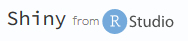
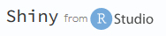

Python dans l’environnement du statisticien public
Canal’Stat - 30/09/2022
Qui sommes-nous ?
François Semecurbe
Chef du bureau des Statistiques Structurelles, Environnementales et ForestièresBenoit Mirouse
Responsable Enquête TERUTIAnaël Delorme
Responsable des statistiques sur l’Aquaculture
Où sommes-nous ?
Tout allait bien… grâce à R !
Mais… Python débarque
Python en 2 mots
- Langage de programmation
- Open source et gratuit
- Utilisation de bibliothèques spécialisées s’adaptant aux métiers
- Très grande communauté d’utilisateurs et contributeurs
Alors… que faire avec Python dans nos équipes de stat publique ?
Et si ?… on faisait sans Python
Et oui, R c’est super ! …
Mais on se passe de tout ce que nous offre Python 
Jupyter pour collaborer simplement sur nos données
Cartographie simplement
Démo
Ou en vidéo : ## Cartographie simplement
Code création des ronds
variables = ["Recolte de bois", "Recolte de bois/Grumes", "Recolte de bois/Bois d'industrie", "Recolte de bois/Bois energie"]
colors = ['brown', 'green', 'blue', 'red']
ronds=list()
for i,v in enumerate(variables):
r = exf.centroid.buffer(1000*k*exf[v]**0.5)
r = gpd.GeoDataFrame(r,geometry=0)
r = r.to_crs(epsg=4326)
r = pd.merge(r, exf[[v,'Departement']], left_index=True, right_index=True)
ronds.append(r)Cartographie simplement
Code création des couches
app.display(name='title', value='Enquete EXFSRI')
for i in range(4):
app.vector_layer(
data=ronds[i],
name=variables[i],
style={"color":colors[i]},
visible=False,)
app.base_layer(
name="Open Street Map",
visible=True,
url="https://{s}.tile.openstreetmap.org/{z}/{x}/{y}.png",)
app.vector_layer(
data=reg,
name="Regions",
style={"color":'black', "fillOpacity":"0"},
visible=True,)
app.vector_layer(
data=dep,
name="Departements",
style={"color":'dimgrey', "fillOpacity":"0", "weight":"1"},
visible=False,)Cartographie simplement
Ressources
Analyse de textes
A partir des réponses des enquêtés :
Analyse de textes
Code
import pandas as pd # Pour traiter les données
from wordcloud import WordCloud # Pour faire le nuage de mots
import matplotlib.pyplot as plt # le package de gestion des graphiques
from PIL import Image # masque d'image format poisson
commentaires = pd.read_csv('commentaire_aqua.csv', sep=';', engine='python', encoding='latin')
mots = commentaires['Q6.4'].str.lower().str.split(' ').sum()
stopwords = pd.read_csv("stop_words_french.txt", header=None)[0].tolist()
text = ' '.join([mot for mot in mots if mot not in stopwords])
wordcloud = wordcloud = WordCloud(width=6800, height=2800, max_words=60, colormap='RdYlGn',scale=3, background_color="white").generate(text)
plt.figure( figsize=(20,10), facecolor='k')
plt.imshow(wordcloud, interpolation='bilinear')
plt.axis("off")
plt.show();Et plein d’autres choses
- Web scraping : extraire des données directement de sites internet
- Machine Learning : créer des systèmes qui apprennent en fonction des données qui traitent.
Exemple : reconnaissance d’images, recommandation de produits, détection de fraudes…
Tutoriels sur le SSP Cloud
Ok Python c’est top ! …
On vous l’a dit : R c’est super !
Se passer de R est possible, mais cela nous ferait passer à côté :
 
 …R + Python ensemble, est-ce possible ?
Cohabitation naturelle entre ces 2 langages
Idée à discuter : prendre le meilleur des 2 mondes
Merci !
Cette présentation a été réalisée avec Quarto :
- les sources sont disponibles sur Github : https://github.com/anaelDelorme/pythonCanalStat
- la présentation est accessible sur Github - Pages : https://anaeldelorme.github.io/pythonCanalStat/
- les images proviennent de Pixabay et de Storyset
Qu’en pensez-vous ?
Canal’Stat - 30/09/2022